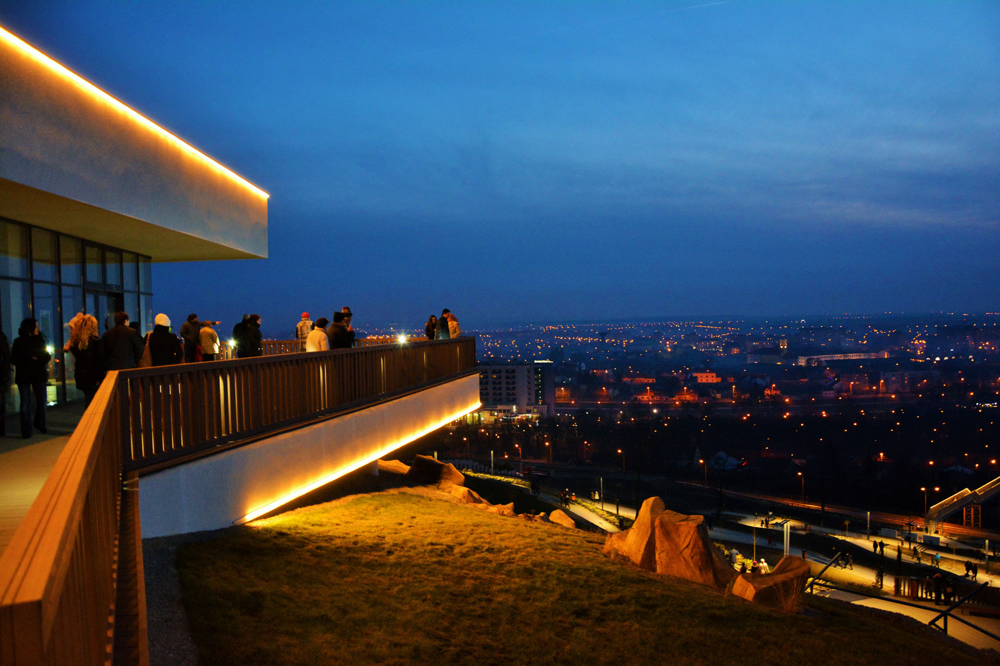
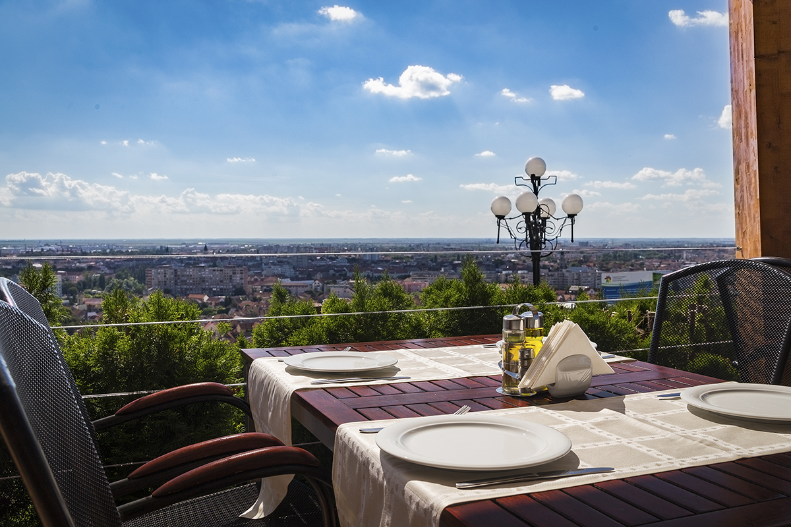
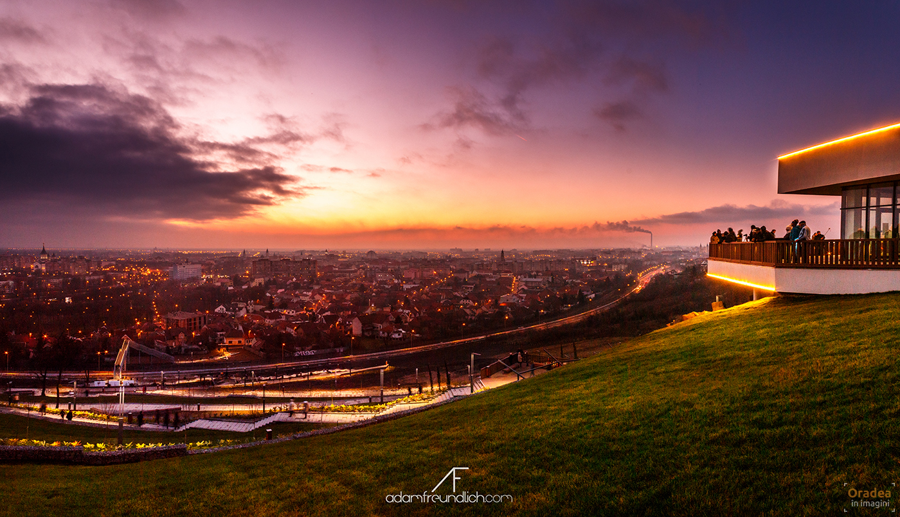
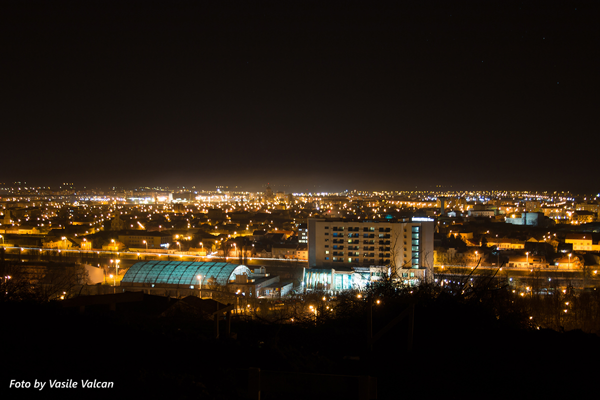

Dealul Ciuperca
| Dealul Ciuperca este locul potrivit de unde te poți bucura de răsăriturile, apusurile și cerul înstelat ce surprind plăcut pe oricine. |
| Acesta este unul dintre simbolurile orașului Oradea și poate fi găsit cu ușurință urcând cu mașina până în capătul străzii Graurilor sau pornind la pas de pe strada Olteniei – între nr. 68 și 70. Acest punct turistic a fost reamenajat de curând. |
| Băncuțe, pergole, zone de relaxare, amfiteatru în aer liber, o cafenea, un centru de informare turistică, cinci puncte de belvedere legate între ele cu o alee și mult spațiu verde – toate cele menționate anterior sunt puse la dispoziția vizitatorului, indiferent de zi și de anotimp. |




Realizat de Vlad Luncan - 2022